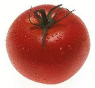

Tomate

La siembra
Fecha: De agosto a diciembre (almácigo).
Forma: Se siembra en almácigo y entre las 6 y las 8 semanas se transplanta.
Distancias: 30 centímetros entre plantas y 80 centímetros entre filas.
Cantidad de semillas (para 10m2): 1 gramo, que dará aproximadamente 30 plantas.
¿Qué tenemos que hacer para cuidar nuestro cultivo?
- Es un cultivo muy sensible a las heladas.
- Se deben hacer almácigos protegidos en las épocas extremas; en primavera se pueden hacer a campo.
- Cuidar de que la planta no sufra por calor y falta de agua al transplantarla al lugar definitivo; si se puede llevar con terroncito, mejor.
- Es muy importante mantener limpio de malezas en las etapas tempranas del cultivo.
- Hay variedades rastreras que no necesitan conducción (tomate perita) y otras que sí necesitan que se encañe el cultivo y se vaya atando a medida que crece.
La cosecha
- La cosecha se inicia a los 75 días del transplante.
- Se cosechan los tomates pintones en verano y los maduros en otoño e invierno.
Producción de semillas
Reservar algunas plantas grandes y sanas a fin de que sus frutos maduren. Seleccionar los mejores frutos, sacar las semillas, lavarlas, secarlas y guardarlas.